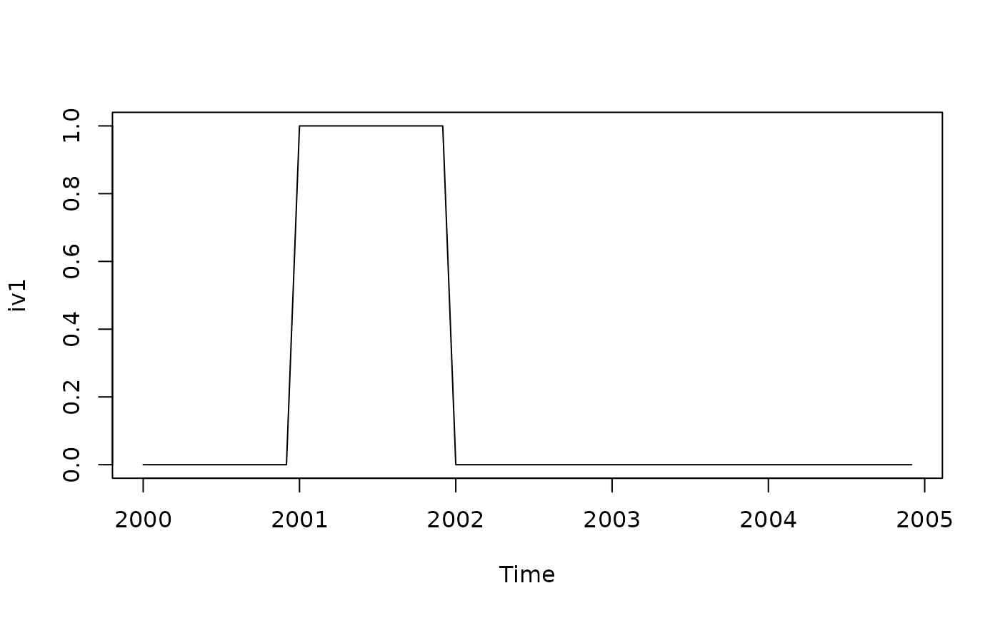
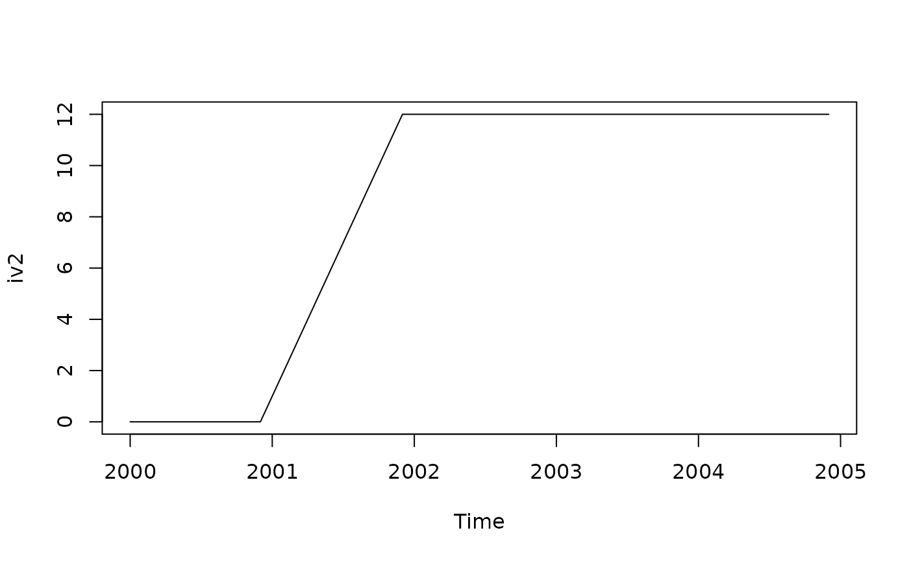

Function allowing to create external regressors as sequences of zeros and ones. The generated variables
will have to be added with add_usrdefvar function will require a modelling context definition
with modelling_context to be used in an estimation process.
Usage
intervention_variable(
frequency,
start,
length,
s,
starts,
ends,
delta = 0,
seasonaldelta = 0
)Arguments
- frequency
Frequency of the series, number of periods per year (12,4,3,2..)
- start, length
First date (array with the first year and the first period) (for instance
c(1980, 1)) and number of periods of the output variables. Can also be provided with thesargument- s
time series used to get the dates for the trading days variables. If supplied the parameters
frequency,startandlengthare ignored.- starts, ends
characters specifying sequences of starts/ends dates for the intervention variable. Can be characters or integers.
- delta
regular differencing order.
- seasonaldelta
seasonal differencing order.
Details
Intervention variables are combinations of any possible sequence of ones and zeros
(the sequence of ones being defined by the parameters starts and ends)
and of \(\frac{1}{(1-B)^d}\) and \(\frac{1}{(1-B^s)^D}\) where \(B\) is the
backwards operator, \(s\) is the frequency of the time series,
\(d\) and \(D\) are the parameters delta and seasonaldelta.
For example, with delta = 0 and seasonaldelta = 0 we get temporary level shifts defined
by the parameters starts and ends. With delta = 1 and seasonaldelta = 0 we get
the cumulative sum of temporary level shifts, once differenced the regressor will become a classical level shift.
References
More information on auxiliary variables in JDemetra+ online documentation: https://jdemetra-new-documentation.netlify.app/
Examples
iv1<-intervention_variable(12, c(2000, 1), 60,
starts = "2001-01-01", ends = "2001-12-01")
plot(iv1)

iv2<- intervention_variable(12, c(2000, 1), 60,
starts = "2001-01-01", ends = "2001-12-01", delta = 1)
plot (iv2)

# using one variable in a a seasonal adjustment process
# regressors as a list of two groups reg1 and reg2
vars<-list(reg1=list(x = iv1),reg2=list(x = iv2) )
# creating the modelling context
my_context<-modelling_context(variables=vars)
# customize a default specification
# init_spec <- rjd3x13::x13_spec("RSA5c")
# new_spec<- add_usrdefvar(init_spec,id = "reg1.iv1", regeffect="Trend")
# modelling context is needed for the estimation phase
# sa_x13<- rjd3x13::x13(ABS$X0.2.09.10.M, new_spec, context = my_context)